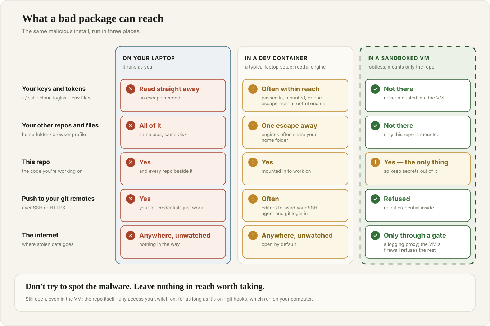
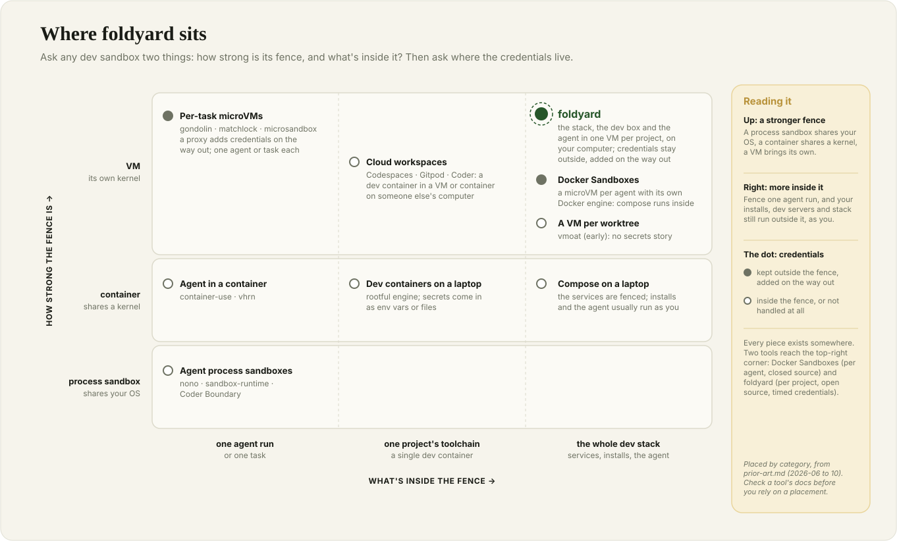
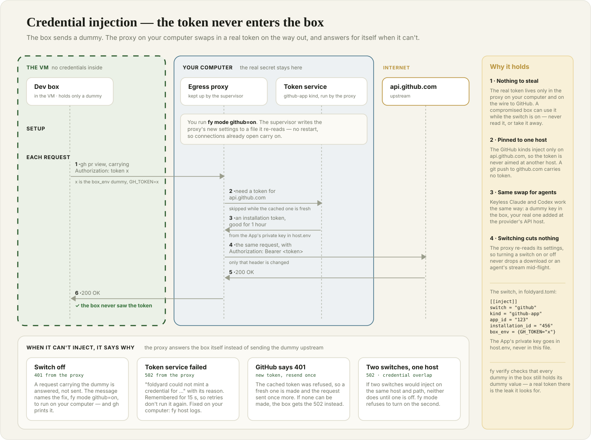
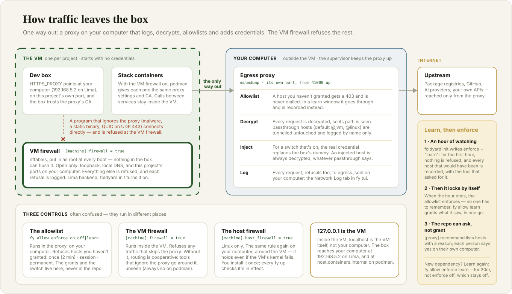
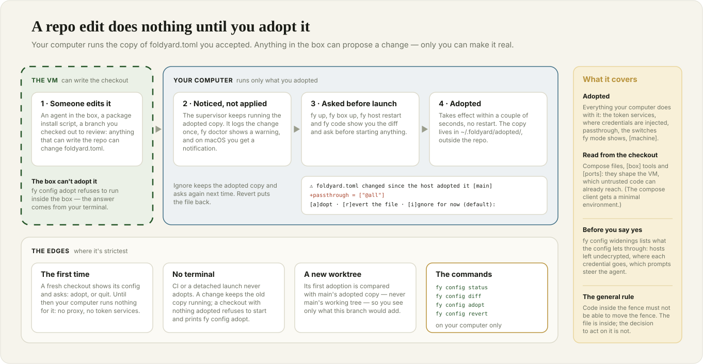
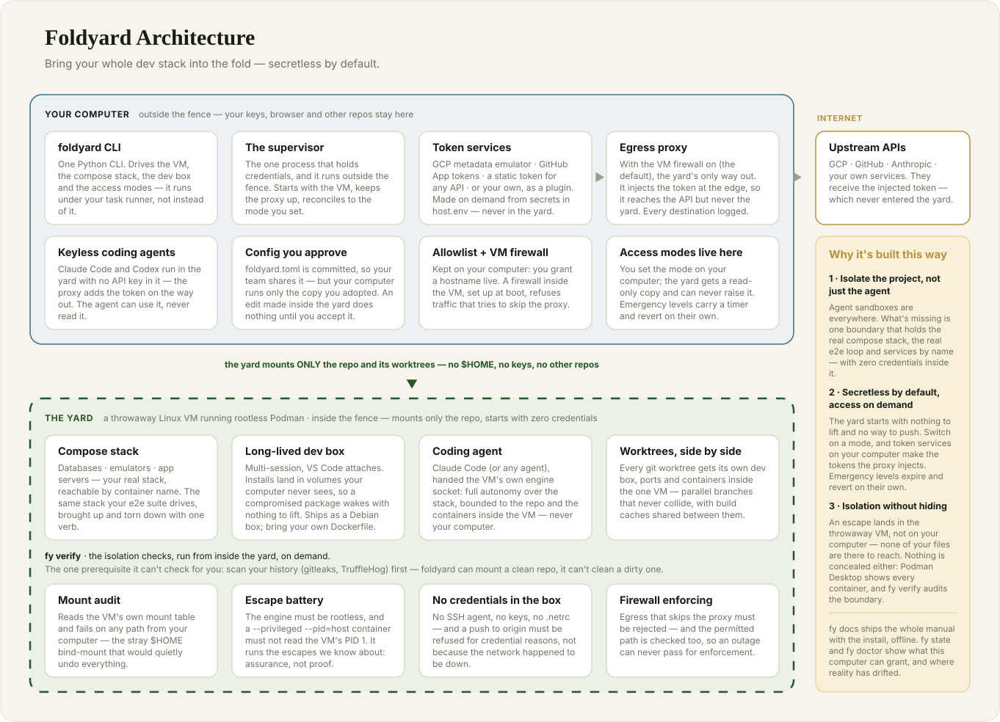
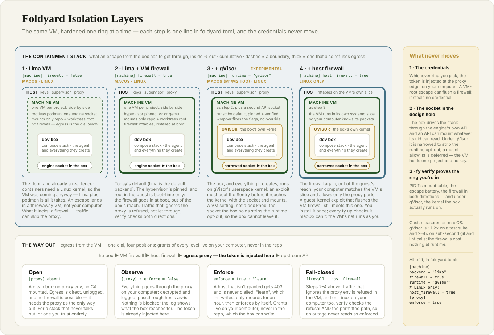
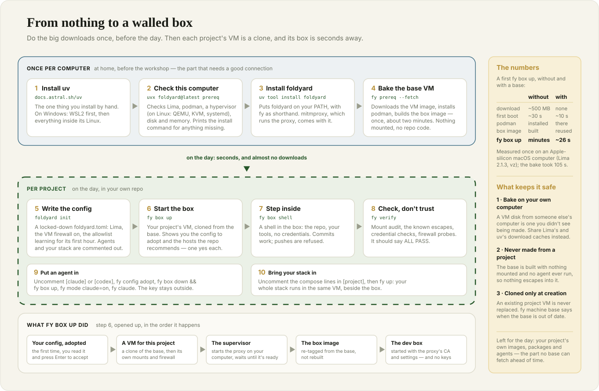

Previous slide Next slide Toggle fullscreen Toggle overview view Open presenter view
Workshop · part one
Fencing the yard
Why your dev environment needs a sandbox — and how to pick one
What you'll leave with
Why a developer laptop is now one of the most valuable targets in a company.Four questions to ask any sandbox: about files, credentials, network and control.A checklist for comparing tools, so you can choose one that fits your risks.Then, hands-on: one of those tools running your own project.
You don't have to pick the tool we use today. But you should leave being able to choose a sandbox that works for you.
Setting up (1/2)
If you're on Windows you have to use WSL2: in PowerShell as Administrator , wsl --install -d Ubuntu-24.04, then reboot when asked.
Otherwise, these are the tools we'll need to install first:
uv, a Python runtime and package managerlima, or Linux Machines, the virtual machine managerpodman, an open source, daemonless alternative to Docker with safer defaults
Setting up (2/2): in a terminal
brew install uv lima podman
sudo apt-get update && sudo apt-get install curl qemu-system-x86 qemu-utils ovmf podman
curl -LsSf https://astral.sh/uv/install.sh | sh
curl -fsSL https://github.com/lima-vm/lima/releases/download/v2.2.0/lima-2.2.0-Linux-x86_64.tar.gz \
| sudo tar Cxz /usr/local
Then install the sandbox foldyard itself and start downloading the VM image:
uv tool install foldyard
foldyard prereq --fetch
Part 1
Your laptop is the prize
What's on your laptop right now
SSH keys — push access to every repo you can reach
Cloud logins: gcloud, aws, az — often with admin rights
GitHub / GitLab tokens, ~/.npmrc, ~/.pypirc
.env files with real API keysBrowser sessions, password-manager sessions
Every other project you've ever clonedYour AI tools' logins and settings
Your editor and its extensions
Your shell history
All of it readable by any program you run — because it runs as you .
Who actually runs code on your laptop?
You. Hopefully carefully and not permanently as admin.Every dependency you install. npm install, pip install, uv sync run install scripts — code from strangers, with your rights, before you've read a line of it.Your build tools and dev servers , and everything they pull in.Your editor's extensions , updated automatically.AI agents , which read untrusted text (issues, web pages, docs, other people's code) and then run commands.
The shared entry point: code you didn't write, running with your rights.
Story 1 · A worm in the package registry
Shai-Hulud — npm, September 2025, and again since.
You install a package that a compromised maintainer account republished.
Its install script searches your laptop for secrets (it literally runs a secret scanner).
It uses your npm token to publish infected versions of your packages.
It dumps what it found into a new public GitHub repo.
The worm spreads itself. Its fourth generation (2026) also targets CI pipelines and plants persistence in developer tools.
Story 2 · Malware that asked your AI for help
Nx "s1ngularity" — August 2025.
Malicious versions of a popular build tool shipped an install script.
It looked for AI command-line tools on the laptop — Claude, Gemini, Q — and ran them, safety prompts off, to search the disk .
Results went to a public repo in the victim's own GitHub account.
In a second wave, stolen tokens were used to make thousands of private repos public.
Your AI tools are capable, logged in and on your laptop . That makes them part of the attack surface.
Story 3 · Instructions hidden for your agent
TrapDoor — May 2026, npm + PyPI + crates.io.
The usual: packages that steal SSH keys, cloud credentials and tokens.
The new part: pull requests to popular AI projects that try to add CLAUDE.md.cursorrules
The instructions asked the coding assistant to run a "security scan" — that finds and sends out secrets.
A file your agent reads is code your agent runs.
Story 4 · The editor update
A trojanised VS Code extension — May 2026.
A backdoored release of a popular extension was live on the marketplace only for minutes .
Auto-update delivered it to existing users as a routine update.
One of the affected laptops belonged to an employee at GitHub; GitHub confirmed internal repositories were taken.
Nobody clicked anything suspicious. The update was the attack.
Story 5 · It comes back after you clean up
The 2026 worm generation installs persistence on developer machines:
a background daemon that watches your GitHub token — and deletes files if you revoke it;
injected editor tasks (.vscode/tasks.json);
injected AI-agent hooks in ~/.claude/settings.json.
The published advice: find and remove all of it before rotating your credentials.
Rotating keys after an infection is a must, yes, it's annoying
Story 6 · The key nobody revoked
LiteLLM — the AI gateway, October 2026. Its second supply-chain compromise this year.
May: a coding agent's config file (opencode.json) holding a platform master key is pushed to a public repo. The commit is force-pushed away. The key is never revoked .October: the key fetches an org owner's GitHub CLI token from that platform. The token covers the whole account, not scoped down.With it: CI secrets sent out, two maintainers' tokens, a release built from a lookalike fork.
A backdoored litellm is live on PyPI and Docker Hub for about two hours.
Hiding a leaked key isn't revoking it.
The pattern: everything is one hop away

The lethal trifecta
Simon Willison's name for the combination that turns an AI agent into a data leak:
1 · Private data
Your keys, your code, your customers' data.
2 · Untrusted content
Issues, web pages, docs, dependencies — anything someone else wrote.
3 · A way to send data out
Network access — or anything that can become network access (a push, a comment, a URL).
A developer laptop running an agent has all three by default . Take away any one and the attack falls apart. A sandbox is a way of taking away legs.
Part 2
What a sandbox must get right
Four questions — then one more
Ask
What "good" looks like
Files What can code inside see ?
Only the project. Not your home folder, not your other repos.
Credentials What can it hold ?
Nothing by default. Access you switch on, for a while, narrowly.
Network What can it send , and where?
Everything goes through a gate you control, and the gate can't be skipped.
Control Can the inside move the fence ?
No. Config the inside can edit doesn't take effect until you approve it.
And: can you check it? A fence you can't test is a fence you're taking on trust.
How strong is the fence?
Fence
Separates
Typical gap
Permission prompts in the agentintentions
You click "yes" 200 times a day. Install scripts never ask.
Process sandbox (macOS Seatbelt, Linux Landlock / bubblewrap)one process
Usually one agent, not your whole stack; rules are easy to get subtly wrong.
Container processes, files
Shares your kernel. Whoever has the container engine's socket is effectively root.
Virtual machine a whole OS
Its own kernel. Costs memory and some speed.
Remote machine (Codespaces and friends)everything
Your code and data live on someone else's computer; you need a network.
Stronger fences cost more. The question is what you need to keep in , and what you need to keep out .
The landscape

Files: mount the project, nothing else
A container engine on macOS or Windows runs inside a VM — and that VM often shares your whole home folder into it. One container escape and every key is readable again.
"Mounts only the repo" also means the repo's ignored files : .env, *.pem, credentials.json.
So: scan the working tree, not just history — then move real secrets out of the folder.
gitleaks git .
gitleaks dir .
A sandbox can mount a clean repo only. It can't clean a dirty one.
Credentials: the best secret in a sandbox is none
Nothing at rest. No key files, no token variables, no credential helpers inside.Swap at the edge. The inside holds a dummy; a proxy outside swaps in the real credential as the request leaves. The API sees the real token; the sandbox never does.Short-lived and narrow. Prefer tokens that expire in an hour and can do one job."Act as me" is an emergency. Anything with your identity gets a timer and switches itself off.
This used to be rare. In 2026 it became close to standard in agent sandboxes — good news when you're choosing.
Swapping the credential at the edge

Network: the third leg
Exfiltration needs a way out. Controlling egress is how you take away that leg.
Proxy settings are a suggestion. Well-behaved tools honour HTTPS_PROXY; malware, Go binaries and many SDKs ignore it.A firewall makes it a rule. Traffic that skips the proxy is refused, not just logged.An allowlist decides where traffic may go. Learn for a while, review what you saw, then enforce.Watch for "trusted" hosts that are also places anyone can upload to (package registries, GitHub, pastebins).
Gating the way out

Control: the inside must not move the fence
Story: an agent inside a sandbox edited the project's sandbox config. The change reached the outside within two seconds — including where credentials were sent .
Anything the inside can write , the outside must not trust : repo config, compose files, scripts.
The reverse is just as important — repo files that run on your computer :
dev container initializeCommand
editor tasks and recommended extensions
git hooks and aliases, .envrc
Fix: the outside runs a copy you approved , after reading the diff.
A repo edit does nothing until you adopt it

Verify, don't trust
A sandbox should test itself from the inside : what's mounted, which escapes fail, which credentials are absent, whether traffic that skips the gate is refused.
Test the test. One self-check printed ALL PASS when its probes had never run; the fix was a control that must succeed first, proving each probe ran.Re-run it after every config change.
If the only evidence that the fence holds is the vendor's README, then you don't know.
What no sandbox fixes
It can still change your code. Review diffs; let CI and branch protection do their job.Access you switch on can be used while it's on. Don't switch on a credential and then run an untrusted install.A dirty repo stays dirty. Secrets in the project folder are inside the fence.Full autonomy inside is still full autonomy. An agent can wreck its own sandbox — that's the point of making it throwaway.Humans approve things. A diff nobody reads is a gate nobody guards.
Questions to ask any sandbox
Does it have its own kernel (a VM), or share yours?
What exactly is mounted — and is your home folder anywhere near it?
Where do credentials live? Can the inside ever read one?
Is egress enforced , or only routed when software cooperates?
Can the inside edit the config that the outside obeys?
Does it ever run repo files on your computer ?
Does it hold your whole dev loop (database, services, tests, editor), or just one agent run?
Can you verify it yourself?
Part 3
One answer: foldyard
The one-glance picture

How foldyard answers the questions
Question
Foldyard's answer
Own kernel?
Yes — a throwaway Linux VM per project (Lima), rootless Podman inside
What's mounted?
The repo and its worktrees. No home folder
Credentials?
None by default. Switched on per job, mostly swapped in by the proxy; "act as me" levels expire
Egress?
Every request goes through a proxy on your computer; with [machine] firewall = true, the VM firewall refuses anything else
Inside edits config?
Inert until you read the diff and adopt it
Repo code on your computer?
foldyard runs none: its config is data. Your git still runs hooks
Whole dev loop?
Yes — your compose stack, the dev box, your editor's backend, the agent
Verify?
fy verify: mounts, escape attempts, credentials, traffic that skips the proxy refused
Harden it one step at a time

If foldyard isn't for you
It was made with a startup's needs in mind — pick by your threat model, not by ours.
Just one agent, short tasks? A per-task agent sandbox (VM- or process-based) may be all you need.Happy with closed source and a Docker account? Docker Sandboxes also fits a whole stack in a VM, with credentials kept outside.Already on dev containers? Harden them: rootless engine, no home-folder mount, no secrets in env, an egress gate.Can't run a VM locally? A remote dev environment moves the whole risk off your laptop.Whatever you pick: run it through the eight questions.
Foldyard's own survey of the landscape: docs/prior-art.md in the foldyard repo.
From nothing to a walled box

Today's plan
Do
Look for
0
fy prereqno ✗, base VM ✓
1
cd your-repo → foldyard init --with vscodea foldyard.toml to read
2
fy box up → fy box shell"cloning the base VM" — seconds, not minutes
3
fy verify (on your computer, then in the box)ALL PASS
4
fy code → uncomment [claude] or [codex] in the box → fy config diff on your computer → fy config adopt → fy box down && fy box up → fy code → fy mode claude=on → fy claudethe box's edit in the diff, then a hidden prompt for your key, once
5
ask the agent to fill in your stack → fy config diff → fy config adopt → fy up → fy open
your app, running in the VM
The allowlist learns for its first hour . When it starts refusing, fy allow learn grants what it saw, after you've reviewed it.
When something's off
fy doctor diagnoses; fy tui shows the same checks, with one-click fixes.Changed the config and nothing happened? It needs adopting: fy config diff, then fy config adopt.Agent gets 401s? The switch is off: fy mode claude=on.A request refused? Find it in fy tui's Network Log and grant it there, or fy allow add <host>.Everything's slow or swapping? Lower memory_mib under [machine], fy config adopt, then fy machine recreate.Reading more: fy docs — the whole manual, offline, matched to your version.
Sources and further reading
Speaker notes. Roughly 35 minutes, then the hands-on part.
The point of this half is NOT "use foldyard". It is: understand the threats well enough to choose
whatever fits your own threat model. Foldyard only appears in part 3, as one worked example.
First wave from 14–15 Sep 2025; Krebs: at least 187 packages in days. Counts differ between
sources — quote "hundreds of packages".
Wiz: 400+ users/orgs, 5,500+ private repos exposed. The malware's own collector went for wallets, keystores, .env files and SSH keys; Wiz describes the AI CLIs as used for "reconnaissance" with flags like --dangerously-skip-permissions and --yolo.
Window reported as 11–18 minutes.
Five months from leak to release. The earlier 2026 compromise (March, 1.82.7/1.82.8, traced to the
Trivy action in its CI) is a separate incident: Datadog says no connection between the two has been
established, so don't say "hit again because they didn't rotate after March". The lesson is this
one key.
The owner's token is the kind `gh auth login` leaves on every laptop: the whole account, unscoped.
The release gate had been relaxed that week to "any two engineers"; the attacker held two
engineers' tokens.
Datadog: ~23 million weekly downloads. The payload steals credentials on every Python start and
carries a second-stage RAT.
Left: on a normal laptop, one malicious install script reaches every key, every repo, the browser,
and can send anything anywhere. Right: in a sandbox, it reaches the one repo, holds no keys, and
its traffic goes through a gate.
Read it as two questions. Up: how strong is the fence. Right: how much of your work fits inside
it — one agent run, or the whole dev stack (database, services, tests, editor backend).
Most agent sandboxes are strong but small. Most dev environments are big but not a security fence.
Two tools reach the top-right corner. Docker Sandboxes is the closest to foldyard: a microVM with
its own Docker engine, so the whole stack fits, and credentials added on the way out. The
differences: it's closed source and needs a Docker account sign-in (local use is free, commercial
included); a sandbox is per agent, not per project; and there are no modes that switch a
credential on for a set time.
Story: docs/archive/lessons.md §5 (the channel, not the field) and ADR-0022.
Story: docs/archive/verify-false-pass.md
Figures in the incident write-ups differ between sources and change as investigations go on. Re-check them the week of the talk.